Difference in Difference
Packages
Here are the packages we will use in this lecture. If you don’t remember how to install them, you can have a look at the code.
- stargazer for nice regression tables
- pander for nice data tables
- dplyr for data manipulation
- scales to adjust values in simulated data
library( stargazer )
library( pander )
library( dplyr )
library( scales )Learning objectives
- What is the scope of a difference-in-difference model?
- What is the right design to apply a difference-in-difference model?
- How should you organize your data before using a difference-in-difference model?
- What are the key coefficients of a difference-in-difference model? How do you interpret each of them?
- What is the parallel trend assumption?
- Applying a difference-in-difference model to data in R
The key concept
The difference-in-difference (diff-in-diff) is a powerful model which allows us to look at the effect of a policy intervention by taking into consideration:
- how a group mean changes before and after a policy intervention (treatment group) AND
- compare this change with the mean over time of a similar group which did not undergo the treatment (control group).
We can see a representation of the model in figure 1. We have two groups, one which underwent the treatment and one which did not undergo the treatment (control group). For both groups we observe the average outcome before and after the intervention.
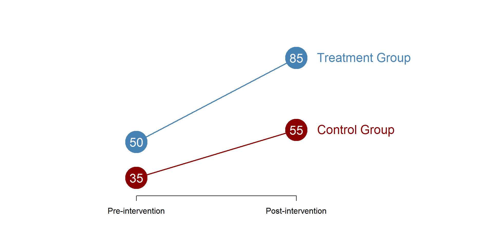
Figure 1. Difference in difference model
As suggested by the name, the diff-in-diff estimator is the difference of their mean differences. More clearly, the diff-in-diff estimator takes
- the difference in the treatment group before and after the treatment (the treatment effect)
and substracts:
- the difference in the control group before and after the treatment (the trend over time)
as in the following formula:
\[\begin{equation} \text{(Treatment_post - Treatment_pre) - (Control_post - Control_pre) = Diff-in-Diff estimate} \tag{1} \end{equation}\]
We can calculate the difference-in-difference based on graph 1, as below:
\[\begin{equation*}
\text{(85 - 50) - (55 - 35) = 15}
\end{equation*}\]
A more detailed calculation can be seen in table 2, the red number in the right down corner is the diff-in-diff estimator - the key parameter we will estimate in our model. When the difference-in-difference estimate is different from 0, then the treatment has had an effect.
Figure 2. Difference in difference, an example
It is important to note that in a diff-in-diff model:
We are going to look at grouped data, as we will always compare a treatment and a control group.
The coefficients will represent group means and their differences. The diff-in-diff model does not include a slope.
The statistical model
In mathematical terms, we are interested in estimating 3 coefficients, as in the following equation:
\[\begin{equation} \text{Y} = \beta_0 + \beta_1*Treatment + \beta_2*Post + \beta_3 * Treatment * Post + \text{e} \tag{2} \end{equation}\]
Where:
\(\text{Y}\) is our outcome variable;
\(\text{Treatment}\) is a dummy variable indicating the treatment (=1) and control (=0) group;
\(\text{Post}\) is a dummy variable indicating pre (=0) and post (=1) treatment;
\(\text{Treatment * Post}\) is a dummy variable indicating whether the outcome was observed in the treatment group AND it was observed after the intervention (=1), or any other case (=0).
Our dataset will look like this, where two subjects undergo the treatment and two subjects did not undergo the treatment. For each subject we registered post and pre treatment outcomes, such that we have two observations for each subject:
Figure 3. Diff-in-Diff dataset
To recap, we have two group - a treatment and a control group - and half of the observations in each group will be before the treatment and half of them after the treatment.
The coefficients
We can estimate a simple diff-in-diff model based on figure 1 to look at the various coefficients.
reg = lm(Y ~ T + P + T*P)
stargazer( reg,
type = "html",
dep.var.labels = ("Outcome"),
column.labels = c(""),
covariate.labels = c("Intercept (B0)",
"Treatment (B1)",
"Post-treatment (B2)",
"Diff in Diff (B3)"),
omit.stat = "all",
digits = 2,
intercept.bottom = FALSE )| Dependent variable: | |
| Outcome | |
| Intercept (B0) | 35.00*** |
| (0.00) | |
| Treatment (B1) | 15.00*** |
| (0.00) | |
| Post-treatment (B2) | 20.00*** |
| (0.00) | |
| Diff in Diff (B3) | 15.00*** |
| (0.00) | |
| Note: | p<0.1; p<0.05; p<0.01 |
Each coefficient represents a group mean or a difference between two means. To facilitate the understanding of each coefficient, we can use the following graphs of our equation (2) and look at each coefficient individually (you can see the values of the coefficients on the left side of the graph).
\(\beta_0\) represents the average outcome of the control group before the treatment.
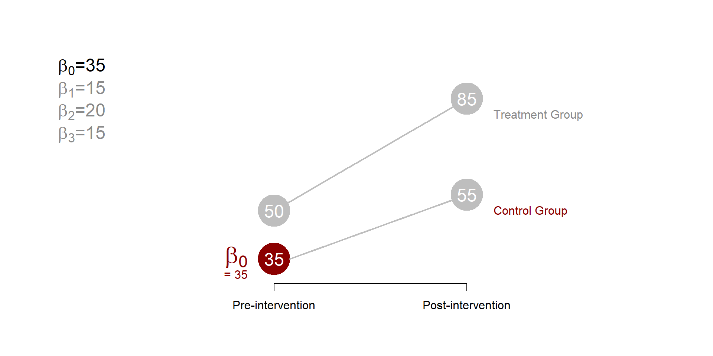
Figure 4. Difference in difference, beta 0
\(\beta_1\) represents the difference between the treatment and the control group before the treatment In this case, \(\beta_1\) is be equal to 15, such that \(\beta_0\) + \(\beta_1\) = 50, the average outcome of the treatment group before the treatment.
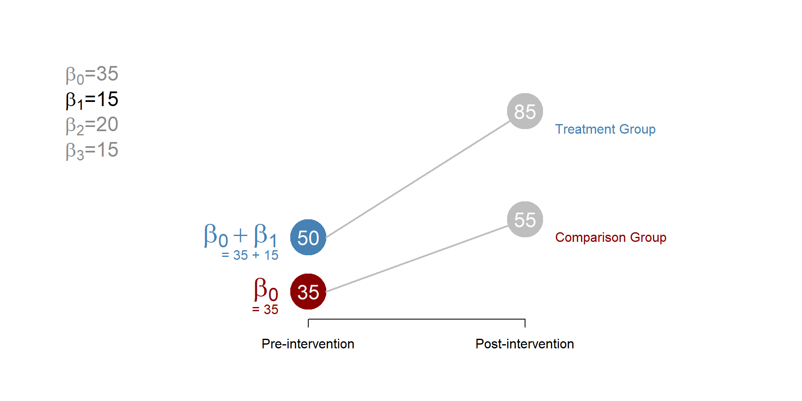
Figure 5. Difference in difference, beta 1
\(\beta_2\) represents how much the average outcome of the control group has changed in the post-treatment period. The average outcome of the control group in the post-treatment period will be equal to the initial (pre-treatment) mean - \(\beta_0\) in figure4 - plus \(\beta_2\).
Note that \(beta_2\) represent the trend over time, or the gains that occur over time independent from the treatment.
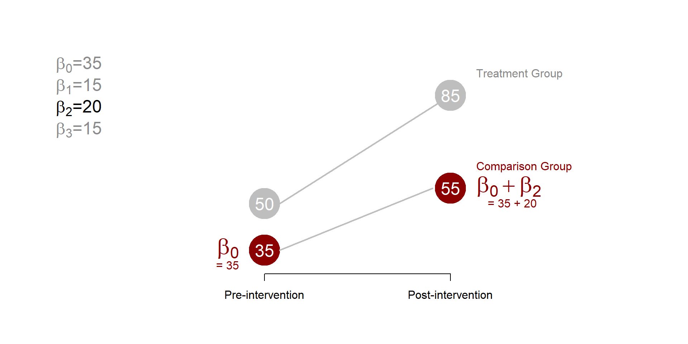
Figure 6. Difference in difference, beta 2
Finally, \(\beta_3\) is the key parameter that we are interested in estimating. It represents how much the average outcome of the treatment group has changed in the period after the treatment, compared to what it would happened to the same group had the intervention not occurred. If \(beta_3\) = 0, we can conclude that the treatment had no effect.
Note that \(\beta_3\) represents the difference; to calculate the average outcome of the treatment group after the treatment, we need to add the initial average outcome (\(beta_0\) + \(beta_1\)), the gains over time independent from the treatment (\(beta_2\)) and the gains because of the treatment (\(beta_3\)).
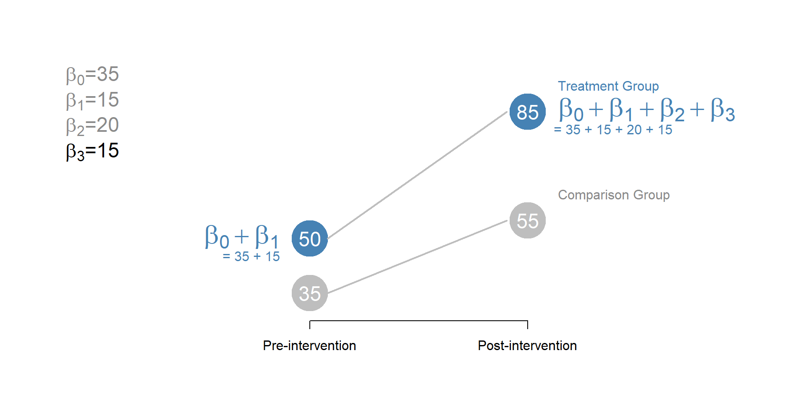
Figure 7. Diff-in-Diff, beta 3
Note that each of the coefficient tests a different hypothesis - it tells us something fundamentally different about the model.
| Graph | \(\beta\) | HYPOTHESES |
|---|---|---|
| Graph 4 | \(b_0\) | Is the average outcome of the control group before the treatment \(\ne\) 0? |
| Graph 5 | \(b_1\) | Is the difference between the control and treatment group before the treatment \(\ne\) 0? |
| Graph 6 | \(b_2\) | Is the difference between the average outcome of the control group before and after the treatment \(\ne\) 0? |
| Graph 7 | \(b_3\) | Difference in difference estimator. Does the treatment have an impact? |
The counterfactual
To better understand \(beta_3\) represented in graph 7, we need to give a better look at the counterfactual. The counterfactual what it would have occured to Y, had the policy intervention not happened; in the diff-in-diff model, the counterfactual is the outcome of the intervention group, had the intervention not occured. \(beta_3\) represents the difference between the counterfactual and the average outcome of the treatment group in the period after the treatment.
You can see it in figure 8.
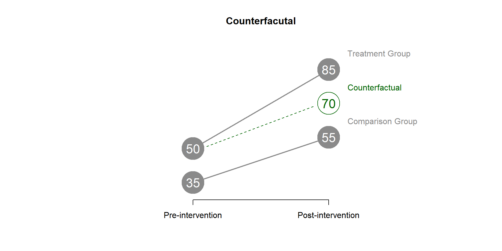
Figure 8. DID counterfactual
We can find the value of the counterfactual using the equation (1).
\[\begin{equation} \text{(Treatment_post - Treatment_pre) = (Control_post - Control_pre)} \tag{3} \end{equation}\]
\[\begin{equation*} \text{(X - 50) = (55 - 35)} \end{equation*}\]
\[\begin{equation*} \text{(X - 50) = 20} \end{equation*}\]
\[\begin{equation*} \text{ X = 20 + 50 = 70} \end{equation*}\]
We can also calculate the counterfactual using the coefficients estimated from our statistical model.
\[\begin{equation} \text{Counterfactual} = \beta_0 + \beta_1 + \beta_2 \tag{4} \end{equation}\]
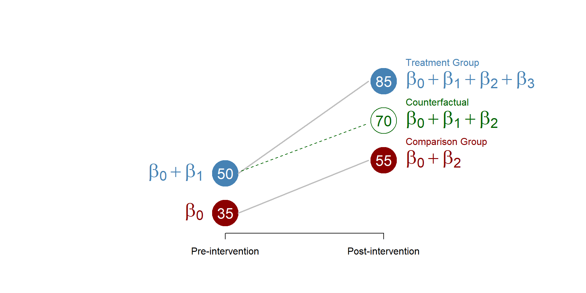
Figure 9. Counterfactual, betas
A Difference-in-Difference model
Figure 10. A housing project in New York
The U.S. Dept. of Housing and Urban Development, along with state and local governments, subsidize several housing projects to create affordable living spaces. This policy has become increasingly important in the past yeas, as rent and housing costs increase in several US cities.
However, there are several critics to housing programs, including the belief that the development of affordable housing might cause a decline in housing value in nearby neighborhoods. There are several theories behind this idea, including:
- individuals prefer living close to high-income families, so affordble housing projects make the neighborhood less attractive;
- with housing projects there is an increase in the neighborhood population which might lead to congestion that negatively affect house prices;
- new housing projects do not fit the neighborhood landscape, and reduced its attractiveness; and so on.
We can test the hypothesis that housing projects reduce housing value using a difference-in-difference model (you can see a great example in this work conducted by Ellen and colleagues in 2007).
We are going to simulate some housing prices data for 2 groups of houses: houses that are located close to a subsized housing site (treatment group) and houses that are far away from a subsized housing site (control group). We are going to look at whether prices have changed before and after the creation of the subsized housing site.
Research question: Do affordable housing projects reduce prices of nearby houses?
Hypothesis: Houses nearby affordable housing projects will report a greater decrease in price over time.
Data
We can have a look at the data:
URL <- "https://raw.githubusercontent.com/DS4PS/pe4ps-textbook/master/data/diff-in-diff-housing-example.csv"
data <- read.csv( URL, stringsAsFactors=FALSE )
head( data, 10 ) %>% pander()| House_Price | Group | Post_Treatment |
|---|---|---|
| 213680 | 0 | 0 |
| 229355 | 0 | 1 |
| 190580 | 1 | 0 |
| 188669 | 1 | 1 |
| 253574 | 0 | 0 |
| 320094 | 0 | 1 |
| 188526 | 1 | 0 |
| 282998 | 1 | 1 |
| 184424 | 0 | 0 |
| 290409 | 0 | 1 |
The dataset contains three variables:
| Variable name | Description |
|---|---|
| \(\text{House Price}\) | House pricing |
| \(\text{Group}\) | Houses close to a subsized housing site (=1) and houses far from a subsized housing site (=0) |
| \(\text{Post_Treatment}\) | Prior to construction of new site (=0) or after subsized housing is built (=1) |
Analysis
Our model is based on the equation (2):
reg <- lm( House_Price ~ Group + Post_Treatment + Group * Post_Treatment )
stargazer( reg,
type = "html",
dep.var.labels = ("Housing prices"),
column.labels = c(""),
covariate.labels = c("Intercept (B0)",
"Treatment group (B1)",
"Post-treatment (B2)",
"Diff in Diff (B3)"),
omit.stat = "all",
digits = 0,
intercept.bottom = FALSE )| Dependent variable: | |
| Housing prices | |
| Intercept (B0) | 216,673*** |
| (3,742) | |
| Treatment group (B1) | 16,461*** |
| (5,292) | |
| Post-treatment (B2) | 35,231*** |
| (5,292) | |
| Diff in Diff (B3) | 34,066*** |
| (7,484) | |
| Note: | p<0.1; p<0.05; p<0.01 |
Discussion of the results
As we discussed in our section “The statistical model” each coefficient tests a different hypothesis. By looking at the results we should be able to answer the following questions:
- Is the comparison group in Time = 1 different from zero?
- Did the treatment and comparison groups differ significantly in the first time period? In other words, do houses in the treatment group cost more than houses in the control group?
- Did the comparison group change significantly between the first and second time periods? In other words, do the prices of houses in the control group increase over time?
- Is the treatment group in Time = 2 different from the counterfactual? In other words, does the construction of an affordable housing site change the price of the nearby houses? If our hypothesis is confirmed we would expect a negative and significant coefficient.
Answers:
The coefficient \(\beta_0\) (the constant) is significant and different from zero. Houses in the control group have an average price of $216,672 in time = 1.
The coefficient \(\beta_1\) (Treatment group) is also significant and different from zero, telling us that at time = 1, houses in the treatment and control group had a different average price. Specifically, houses in the treatment group cost $16,461 more than houses in the control group prior to the new projects. The average price of houses in the treatment group is 216,672 + 16,461 = $233,133.
The coefficient \(\beta_2\) (Post-treatment) is significant and different from zero. We can conclude that the price of houses in the control group increased from time = 1 to time = 2. The average price of houses in the control group increases of $35,230 at time = 2. The average price of houses in the control group at time = 2 is 216,672 + 35,230 = $251,903
Finally, the coefficient \(\beta_3\) (Diff-in-Diff) is significant and different from zero, which means that the construction of an affordable housing site change the price of nearby houses. Particularly, the price increases of $34,066 more than it would have without the construction of the housing site.
Notes on hypothesis-testing in the Diff-in-Diff Model:
Recall that the regression output by default always reports the statistical significance for the hypothesis:
B = 0 (the slope is zero)
If we are looking at the relationship between milligrams of a drug (like caffeine) and heart rate then the test will tell us if the drug has any measurable impact on heart rate (slope=0 means no impact).
In some cases the default hypothesis test is not very meaningful. For example, in this model B0 is statistically significant, which means the average value of a home is different than zero. Is this a useful test? Not really. There would be no reason to assume homes have no value.
The difference-in-difference model can be a little disorienting at first because the coefficients represent group averages, and not slopes. Even more confusing, most groups are constructed from several coefficients. If the comparison group in the post-treatment period is comprised of B0 + B2 then is the test B2=0 meaningful? Actually, it is.
Note that for each question above we would formulate a contrast. Do the houses in the treatment and control groups cost the same before new public housing is built?
B0 = cost of houses in control group prior to construction = $216,672
B0 + B1 = cost of hosues in treatment goup prior to construction = 216,672 + 16,461 = $233,133
Do the houses in the treatment and control groups cost the same before new construction?
B0 + B1 = B0
B1 = 0
So the test of B1=0 is actually the test for pre-treatment differences.
Similarly, do we observe a significant secular trend in the data?
B0 = control group in time=1
B0 + B2 = control group in time=2
Trend = C2 - C1 = (B2 + B0) - B0 = B2
So the test B2=0 is a test of whether we see any secular trends in the data: Trend=0.
Does the program have an impact? Or stated differently, after the treatment does the outcome of the treatment group depart from our counterfactual expectations?
We construct the counterfactual by looking at the average level of the treatment group before the intervention and adjusting for the secular trend to predict where we expect the group to be in the second time period if the program has no impact.
T1 + trend = (B0 + B1) + B2 = counterfactual
B0 + B1 + B2 + B3 = actual observed treatment group outcome
The contrast for comparing the treated group to its counterfactual is:
B0 + B1 + B2 + B3 = B0 + B1 + B2
B3 = 0 (after simplification)
Which is the significance test associated with B3=0 that is reported in the model.
So the coefficients on B1, B2, and B3 all represent meaningful contrasts that map onto useful hypotheses.
The counterfactual
Based on our results, we can calculate the counterfactual using the formula (4):
\[\begin{equation} \text{Counterfactual} = \beta_0 + \beta_1 + \beta_2 \tag{2} \end{equation}\]
The counterfactual represents the price of the houses in the treatment group, had the construction of the housing site never happend. It is equal to 268,364. But because the intervention did occur the price of the houses is equal to 302,430 (the counterfactual + the diff-in-diff).
We can map all these numbers in a graph:
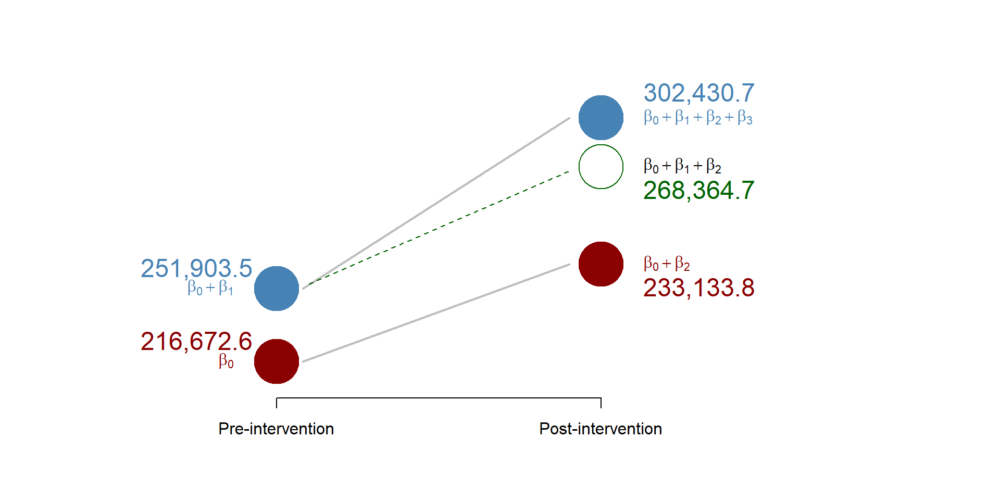
Figure 11. Results from the working example
Replication of a study

Figure 12. Source: http://factsmaps.com/minimum-wage-us-states-july-2018/
We are going to replicate a study conducted by Card and Krueger in 1994 that investigate the relationship between a rise in minimum wage and employment.
Economic theories have long suggested that increases in the minimum wage lead to a reduction in the employment for at least two reasons:
- Businesses are less likely to hire and will rather invest in other resources that are now cheaper because of wage increase
- Higher salaries will induce businesses to raise their prices to compensate their greater costs; as prices increase, we expect fewer buyers, which will lead to lower demand and employment.
These theories have found mixed support but the discussion is still very much open within the policy world, as states discuss the opportunity to rise their minimum wage to help local populations to face increasing living costs. Discussions are currently occuring in New Jersey and Illinois to raise the minimum wage to 15$/hour (New york has successfully passed this same raise in 2018).
One of the first study looking at this policy problem was Card and Krueger’s. They applied a difference-in-difference the design to look at two groups of fast-food restaurants:
- fast-food restaurants in New Jersey where the minimum wage increased from 4.25$ to 5.05$ per hour (treatment group) AND
- fast-food restaurants in Pennsylvania where the minimum wage did not increase (control group).
They collected employment data before and after the minimum wage was approved.
Research question: Do increases in the minimum wage affect employment?
Hypothesis: An increase in the minimum wage is negatively correlated with employment.
Replication Data
URL <- "https://raw.githubusercontent.com/DS4PS/pe4ps-textbook/master/data/DID_Example.csv"
data <- read.csv( URL, stringsAsFactors=F )
head( data ) %>% pander()| ID | Chain | SouthJ | CentralJ | NorthJ | PA1 | PA2 | Shore | Group | Empl |
|---|---|---|---|---|---|---|---|---|---|
| 46 | 1 | 0 | 0 | 0 | 1 | 0 | 0 | 0 | 30 |
| 49 | 2 | 0 | 0 | 0 | 1 | 0 | 0 | 0 | 6.5 |
| 506 | 2 | 0 | 0 | 0 | 1 | 0 | 0 | 0 | 3 |
| 56 | 4 | 0 | 0 | 0 | 1 | 0 | 0 | 0 | 20 |
| 61 | 4 | 0 | 0 | 0 | 1 | 0 | 0 | 0 | 6 |
| 62 | 4 | 0 | 0 | 0 | 1 | 0 | 0 | 0 | 0 |
| C.Owned | Hours.Opening | Soda | Fries | Treatment |
|---|---|---|---|---|
| 0 | 16.5 | 1.03 | 1.03 | 0 |
| 0 | 13 | 1.01 | 0.9 | 0 |
| 1 | 10 | 0.95 | 0.74 | 0 |
| 1 | 12 | 0.87 | 0.82 | 0 |
| 1 | 12 | 0.87 | 0.77 | 0 |
| 1 | 12 | 0.87 | 0.77 | 0 |
These are the variables contained in the dataset.
| Variable name | Description |
|---|---|
| ID | Unique identifier for fast food |
| Treatment | Pre-treatment (=0) and post-treatment (=1) |
| Group | 1 if NJ (treatment); 0 if PA (Control) |
| Empl | # of full time employees |
| C.Owned | If owned by a company (=1) or not (=0) |
| Hours.Opening | Number hours open per day |
| Soda | Price of medium soda, including tax |
| Fries | price of small fries, including tax |
| Chain | 1 = BK, 2 = KFC, 3 = Roys, 4 = Wendys |
| SouthJ | South New Jersey |
| CentralJ | Central New Jersey |
| NorthJ | North New Jersey |
| PA1 | Northeast suburbs of Philadelphia |
| PA2 | Easton and other PA areas |
| Shore | New Jersey Shore |
Here are some basic statistics.
stargazer( data,
type = "html",
omit.summary.stat = c("p25", "p75"),
digits = 2 )| Statistic | N | Mean | St. Dev. | Min | Max |
| ID | 820 | 246.51 | 148.14 | 1 | 522 |
| Chain | 820 | 2.12 | 1.11 | 1 | 4 |
| SouthJ | 820 | 0.23 | 0.42 | 0 | 1 |
| CentralJ | 820 | 0.15 | 0.36 | 0 | 1 |
| NorthJ | 820 | 0.43 | 0.49 | 0 | 1 |
| PA1 | 820 | 0.09 | 0.28 | 0 | 1 |
| PA2 | 820 | 0.10 | 0.31 | 0 | 1 |
| Shore | 820 | 0.09 | 0.28 | 0 | 1 |
| Group | 820 | 0.81 | 0.39 | 0 | 1 |
| Empl | 802 | 8.24 | 8.30 | 0.00 | 60.00 |
| C.Owned | 820 | 0.34 | 0.48 | 0 | 1 |
| Hours.Opening | 820 | 12.65 | 4.76 | 1.00 | 24.00 |
| Soda | 790 | 1.04 | 0.09 | 0.41 | 1.49 |
| Fries | 775 | 0.93 | 0.11 | 0.67 | 1.37 |
| Treatment | 820 | 0.50 | 0.50 | 0 | 1 |
From the descriptive statistics table, you can see that the fast-food restaurants in our data have, on average, 8 employees. Moreover, 80% of the fast-food restaurants are part of the intervention group (see the Group variable).
Analysis
We now estimate the difference-in-difference model based on the equation (2); note that along with the Group and Treatment variables, we also include a set of control variables to account for differences across restaurants. For instance, we include the variable “opening hours” (if fast food restaurants are open more hours they might need more employees) or prices for fries and sodas (more expensive fast food might have more money to hire more employees).
reg <- lm( Empl ~ Group + Treatment + Treatment * Group +
C.Owned + Hours.Opening +
Soda + Fries + as.factor(Chain) +
SouthJ + CentralJ + NorthJ +
PA1 + PA2 + Shore, data = data)
stargazer( reg,
type = "html",
dep.var.labels = ("Full-time Employees"),
omit = c("PA2", "NorthJ"),
column.labels = ("Model results"),
intercept.bottom = FALSE,
covariate.labels = c("Constant (b0)",
"Treatment (b1)",
"Post-treatment (b2)",
"C.Owned","Hours.Opening",
"Soda","Fries",
"Burger King","Roys", "Wendy's",
"SouthJ", "CentralJ",
"PA1", "Shore",
"Diff-in-Diff estimator (b3)"),
omit.stat = "all",
digits = 2)| Dependent variable: | |
| Full-time Employees | |
| Model results | |
| Constant (b0) | 1.62 |
| (4.66) | |
| Treatment (b1) | -3.07** |
| (1.29) | |
| Post-treatment (b2) | -1.32 |
| (1.29) | |
| C.Owned | -0.13 |
| (0.68) | |
| Hours.Opening | 0.55*** |
| (0.10) | |
| Soda | 2.73 |
| (4.26) | |
| Fries | -0.65 |
| (4.07) | |
| Burger King | -0.60 |
| (1.09) | |
| Roys | -1.80** |
| (0.91) | |
| Wendy’s | 2.23** |
| (1.05) | |
| SouthJ | -2.46*** |
| (0.83) | |
| CentralJ | -1.37 |
| (0.86) | |
| PA1 | -2.41* |
| (1.31) | |
| Shore | 0.84 |
| (1.05) | |
| Diff-in-Diff estimator (b3) | 4.12*** |
| (1.41) | |
| Note: | p<0.1; p<0.05; p<0.01 |
Note that two variables were omitted because of collinearity.
Discussion of the results
As before, test your knowledge with the following questions:
- Is the control group in Time=1 different from zero?
- Did the treatment and comparison groups differ significantly in the first time period?
- Did the comparison group change significantly between the first and second time periods?
- Is the treatment Group in Time=2 different from the counterfactual? In other words, does the program have impact?
You can see the correct answers in the code.
# 1. No. The coefficient b0 is not statistically significant suggesting that the mean of the control group is not statistically different from zero (see the variable "Constant").
# 2. Yes, the treatment group has, on average, 3 employees less than the control group. Beta1 is statistically significant (see the variable "Group").
# 3. No. Despite the coefficient b2 = -1.32, suggesting a decrease in the number of employees, it is not statistically significant - therefore, we can conclude that there was no change in the control group.
# 4. Yes. The difference-in-difference estimator is equal to 4, suggesting that after the treatment, employment for restaurant in New Jersey (our treatment group) saw an increase in employment equal to an average of 4 employees.Additional resources
In this section we are going to look at some more cases of difference-in-difference as well as a key assumption that you need to consider.
Cases in difference-in-difference
We can look at some specific cases of difference-in-difference models in the following pictures. This will help you thinking about the different coefficients in the model.
In the first picture, the control group does not increase over time, such that \(\beta_1\) = 0 and the control group outcome is equal to \(\beta_0\) both before and after the treatment.
In the second picture, there is no difference between the control and the treatment group before the treatment. In this case, \(\beta_0\) = \(\beta_2\).
In the last picture, the program has no effect and we would expect \(\beta_3\) = 0 as both groups have increases at the same ration.
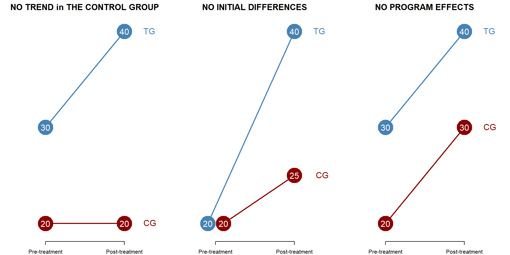
Figure 13. Multiple cases in a DID model
Statistically, you can see each case represented in the following table.
T1 <- seq(20,40)| Dependent variable: | |||
| moxy | |||
| Outcome | |||
| (1) | (2) | (3) | |
| Intercept (A) | 20.0*** | 20.0*** | 20.0*** |
| (1.4) | (1.4) | (1.4) | |
| Treatment Group (B) | 10.0*** | -0.0 | 10.0*** |
| (1.9) | (1.9) | (1.9) | |
| Post-Period (C) | -0.0 | 5.0** | 10.0*** |
| (1.9) | (1.9) | (1.9) | |
| Treat x Post (D) | 10.0*** | 15.0*** | 0.0 |
| (2.7) | (2.7) | (2.7) | |
| Observations | 84 | 84 | 84 |
| Note: | p<0.1; p<0.05; p<0.01 | ||
Parallel trend assumption
The difference-in-difference model assumes that - in the absence of treatment - the treatment and control group have a similar trend over time, so as we can calculate the counterfactual based on the changes in the control group (remember that the counterfactual is calculated by summing\(beta_0\), \(beta_1\), and \(beta_2\) as in equation (4). This is called the parallel trend assumption.
You can see what happens when the assumption is met or not met in the following pictures, where we assume that no treatment has occured.
In the first picture, the two groups have the same growth over time.
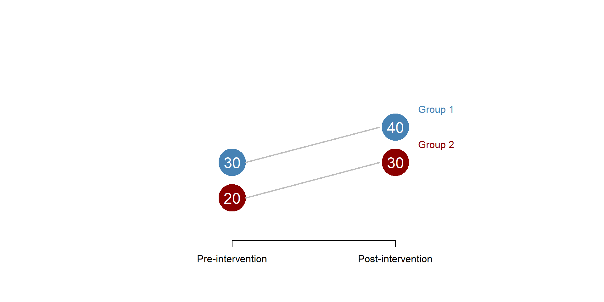
Figure 14. Parallel trend assumption: met
In a difference-in-difference model we would be able to correctly calculate the counterfactual based on the trend observed in the control group and we could obtain our diff-in-diff estimator.
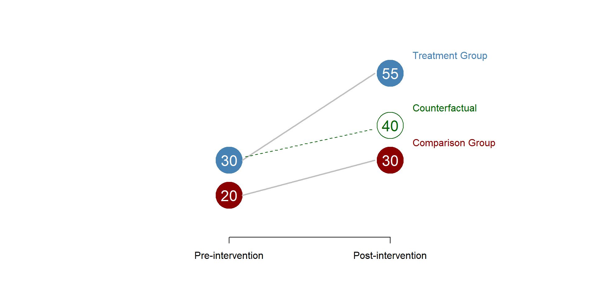
Figure 15. Parallel trend assumption: counterfactual
In this second graph, the two groups have a different trend, with the first group growing more than the second group.
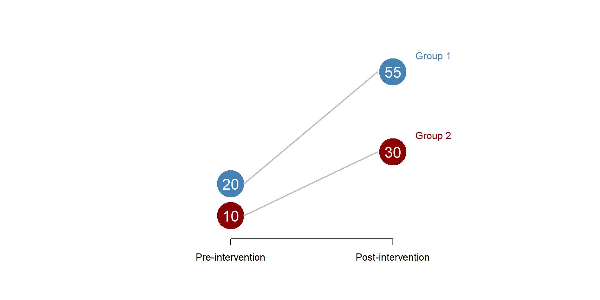
Figure 16. Parallel trend assumption: unmet
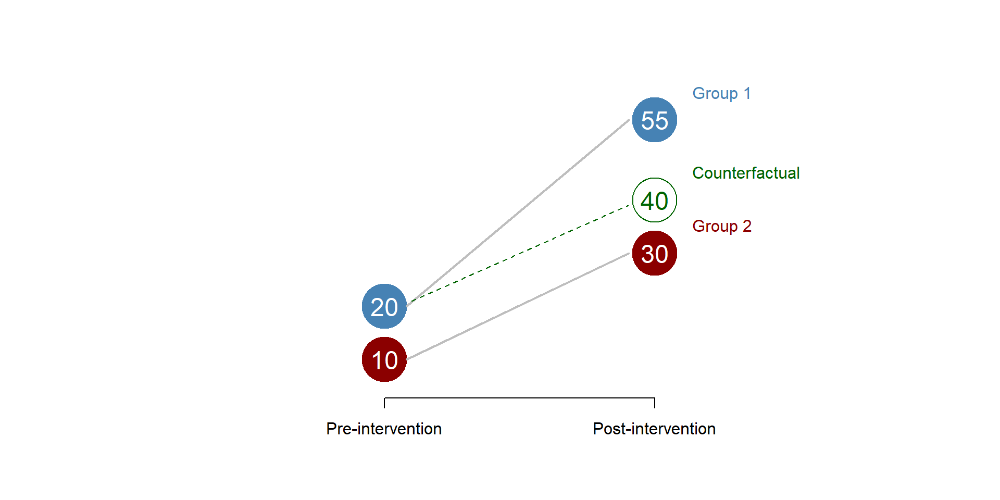
Figure 17. Parallel trend assumption: wrong counterfactual
There is no easy way to test the parallel line assumption. You can (1) use theory to make and argument or (2) if you have longitudinal data compare the trend of the control and treatment group before the intervention to see if they are similar.